Expand all Collapse all Aloy does not need to attack to trigger Discover. She is a Human Warrior rather than an artifact creature, so keep her safe behind your lines with reach and vigilance while your giant robotic beasts do the attacking. Discover X checks the greatest power among attacking artifact creatures at the moment attackers are declared, casting cards with mana value X or less for free or drawing them. Bracket 3: the Game Changer cap is three, filled by Cyclonic Rift, Fierce Guardianship, and The One Ring. No mass land denial. Basalt Monolith, Forsaken Monument, and Walking Ballista provide a compact infinite finish that waits until turn 6 under house rules. The engine: Aloy and Discover 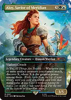Aloy, Savior of Meridianwhenever one or more artifact creatures attack, discover X, where X is greatest power among them. You can cast the discovered spell without paying its mana cost or put it into your hand. Roaming Thronename Human or Warrior. Roaming Throne is an artifact creature that can attack, and it doubles Aloy's triggered ability so you discover twice every combat. Genji Gloveequips for {3} to grant double strike and an extra combat phase each turn. Attack with the equipped machine to discover once in the first combat, untap it, and attack again to discover a second time. Cyberdrive Awakenerturns all your noncreature mana rocks and utility artifacts into 4/4 flying artifact creatures for the turn, swinging over blockers and triggering Discover 4. Simulacrum Synthesizercrafts Construct tokens whose power equals the number of artifacts you control whenever an artifact with mana value 3 or greater enters, generating 8/8 or 10/10 attackers that scale Discover into massive numbers. 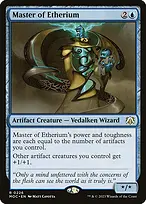Master of Etheriuman artifact creature whose power equals the number of artifacts you control while buffing other artifact creatures by +1/+1. Kappa Cannoneerward {4} and unblockable when an artifact enters, growing each time to deliver huge unblockable Discover triggers. 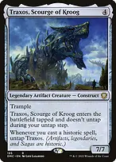Traxos, Scourge of Krooga 7/7 trample artifact creature for four mana that untaps whenever you cast a historic spell, guaranteeing Discover 7 on every swing. 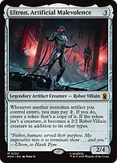Ultron, Artificial Malevolencepay {2} whenever another nontoken artifact enters to create a copy of it, doubling up on beaters, mana rocks, or game-ending bombs. 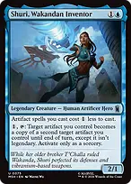Shuri, Wakandan Inventordiscounts artifact spells by {1} and taps to make one artifact become a copy of your biggest artifact creature until end of turn. The giant machines 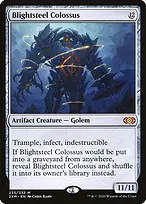Blightsteel Colossusan 11/11 indestructible trampler with infect that discovers for 11 on attack and threatens to eliminate an opponent in a single swing. 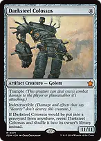Darksteel Colossusan 11/11 indestructible trampler that triggers Discover 11 and survives almost every damage-based or destroy sweeper. Cityscape Leveleran 8/8 trampler that destroys a nonland permanent on cast and on attack while triggering Discover 8; unearth lets it return from the graveyard for a surprise swing. 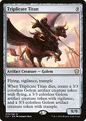Triplicate Titana 9/9 flying, vigilance, trample Golem that discovers for 9 and leaves three 3/3 keyworded Golems behind if removed. 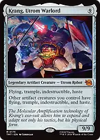Krang, Utrom Warlorda 9/9 flying, trample, indestructible, haste threat that gives all your other artifact creatures flying, trample, indestructible, and haste. 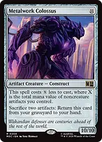Metalwork Colossusa 10/10 that costs {X} less where X is the noncreature artifact mana value on board, coming down for near-zero mana to trigger Discover 10. 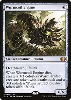Wurmcoil Enginea 6/6 deathtouch lifelink Wurm that stabilizes your life total, discovers for 6, and splits into two tokens on death. 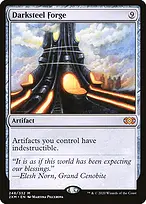Darksteel Forgemakes all your artifacts indestructible, shielding your machines, lands, and mana rocks from sweeps and shatter effects. Portal to Phyrexiaforces each opponent to sacrifice three creatures on entry and reanimates a creature from any graveyard every upkeep; discovering into this completely crushes opposing boards. Infinite mana and the compact finish 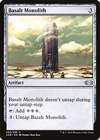+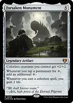Basalt Monolith + Forsaken MonumentForsaken Monument adds an extra {C} when Basalt taps for {C}{C}{C}, netting 4 mana; pay {3} to untap Basalt, netting infinite colorless mana ++Basalt Monolith + Forsaken Monument + Walking Ballistainfinite colorless mana into Walking Ballista shoots the entire table for lethal damage ++Basalt Monolith + Forsaken Monument + Urza, Lord High Artificerinfinite colorless mana into Urza activates his ability infinitely, exiling your library and casting every nonland card Forsaken Monumentdoubles mana from colorless sources, gives colorless creatures +2/+2 to boost Discover triggers, and gains two life whenever you cast a colorless spell. Basalt Monolithacts as early explosive ramp to accelerate Aloy or a big machine, and serves as half of the infinite mana engine. Walking Ballistaan artifact creature that removes problem creatures or planeswalkers early, can be tutored by Urza's Saga or Tezzeret, and acts as the game-ending outlet for infinite mana. Urza, Lord High Artificertaps artifacts for blue mana, creates a Karn-struct token, and serves as an infinite mana sink to cast your entire library. Under Bracket 3 rules, this infinite combo must wait until turn 6 or later. Spend turns 1 through 5 establishing ramp, casting Aloy, and discovering giant threats. Tutors and what to fetch →Fabricate → Basalt Monolithwhen you need the combo engine or ramp →Fabricate → Forsaken Monumentwhen Basalt is already on board or you need to pump your colorless army →Fabricate → Darksteel Forgewhen you need to make your entire artifact board untouchable →Fabricate → Walking Ballistawhen you have infinite mana assembled and need the game-ender →Whir of Invention → Portal to Phyrexiainstant-speed wipe three creatures per opponent at end of turn →Whir of Invention → The One Ringinstant-speed protection and draw →Whir of Invention → Basalt Monolithinstant-speed combo piece directly onto the battlefield →Inventors' Fair → Walking Ballistawhen you have infinite mana assembled and need the game-ender →Inventors' Fair → Darksteel Forgewhen you need to protect your board from an incoming board wipe →Tezzeret, Cruel Captain → Walking Ballista[-3] puts Ballista directly into your hand to close out the game →Tezzeret, Cruel Captain → Sol Ring[-3] early when you need mana development →Urza's Saga → Sol Ringearly explosive acceleration on chapter III →Urza's Saga → Walking Ballistadirect fetch to the battlefield for the win on chapter III →Urza's Saga → Sensei's Divining Toptopdeck control to set up optimal Discover hits Utility engines and card flow The One Ringgrants protection from everything for a turn, stays on board as an artifact, and draws accelerating cards every turn cycle. The Great Hengetaps for two green, gains life, puts +1/+1 counters on entering creatures, and draws a card whenever a creature enters. 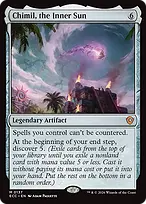Chimil, the Inner Sunmakes your spells uncounterable and discovers 5 at each of your end steps, providing relentless free card advantage. 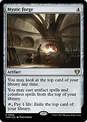Mystic Forgeallows you to cast artifacts from the top of your library and exiles unwanted cards with {T} and 1 life. Sensei's Divining Topsmooths draws, manipulates the top of the library for Discover or Mystic Forge, and protects itself. Unwinding Clockuntaps all artifacts on each opponent's untap step, letting you use mana rocks, Top, and The One Ring repeatedly. Padeem, Consul of Innovationgives all artifacts hexproof from opponents and draws an extra card on upkeep when you control the highest mana value artifact. 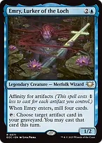Emry, Lurker of the Lochmills cards on entry and taps to cast artifacts directly from your graveyard. 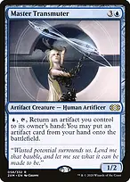Master Transmuterreturns an artifact to your hand to cheat any artifact (such as Blightsteel Colossus or Portal to Phyrexia) onto the battlefield for {U}. Garruk's Uprisinggrants all your creatures trample and draws a card whenever a 4+ power creature enters. 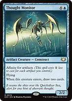Thought Monitoran affinity artifact creature that draws two cards and can attack in the air. 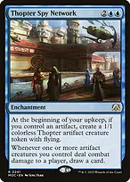Thopter Spy Networkgenerates a flying Thopter token every upkeep and draws cards when artifact creatures deal combat damage. Iron Spider, Stark Upgradeputs +1/+1 counters on all artifact creatures and removes two counters to draw cards. Interaction and protection Fierce Guardianshipfree noncreature counterspell while Aloy is in play to stop sweepers or targeted removal. Cyclonic Riftthe premier asymmetric board wipe; overload it on an opponent's end step to sweep away all blockers and swing for the win. 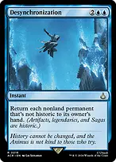Desynchronizationan instant-speed bounce spell that returns all non-historic permanents, leaving your artifacts and legendaries untouched. Heroic Interventiongives all permanents hexproof and indestructible at instant speed against Shatterstorm or Farewell. Mana Draincounters any spell and converts its mana cost into colorless mana on your next turn to fund a giant machine. Counterspellclean two-mana interaction against critical threats. An Offer You Can't Refuseone-mana negation for noncreature spells. Beast Withinflexible instant removal hitting any permanent at the cost of a 3/3 Beast token. Boseiju, Who Enduresuncounterable channel land to destroy opposing artifacts, enchantments, or nonbasic lands. Otawara, Soaring Cityuncounterable channel bounce hitting any opposing nonland permanent. Sink into Stupor // Soporific SpringsMDFC answering a spell or nonland permanent on the stack or battlefield, or played as an untapped blue land. Bala Ged Recovery // Bala Ged SanctuaryMDFC that recurs any card from the graveyard to hand, or played as a tapped green land. Opening hand and sequencing A winning hand needs two to three lands, early ramp (Sol Ring, Mox Opal, Arcane Signet, Nature's Lore, or Three Visits), and either an early engine (Simulacrum Synthesizer, Kappa Cannoneer, Traxos) or card draw (Mystic Remora, The One Ring). Turn 1-2: Deploy mana rocks or land ramp to reach four to five mana quickly. Drop a cost reducer like Etherium Sculptor or Shuri if in hand. Turn 3-4: Cast Aloy or a large artifact creature. If Aloy is already out, deploying Traxos, Kappa Cannoneer, or an affinity beater lets you declare attackers on the following turn and start Discovering immediately. Turn 5+: Swing with your artifact machines. Discover chains into additional free threats, mana rocks, or card advantage. Hold up Fierce Guardianship, Heroic Intervention, or Cyclonic Rift to protect your board. Turn 6+: If combat is locked down or you need to close immediately, tutor and assemble Basalt Monolith + Forsaken Monument for infinite mana into Walking Ballista or Urza.